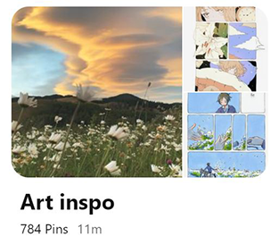

art blocked @_@
by ashley dai.
art block sucks :c
about: i scroll through pinterest often to try to get art inspo. but oftentimes i am mindlessly scrolling and end up coming up with a mass of images i can't process. the purpose of this digital garden is to organize current inspirations so i know what things to focus on in my own work and hopefully overcome some pretty major art block

(case in point my "art inspo" pin collection)
things that are inspiring me...
- Splitting pieces into comic panels: